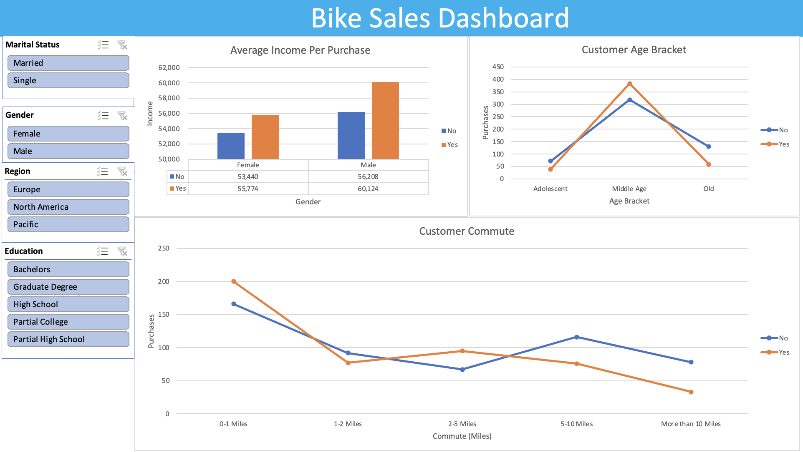
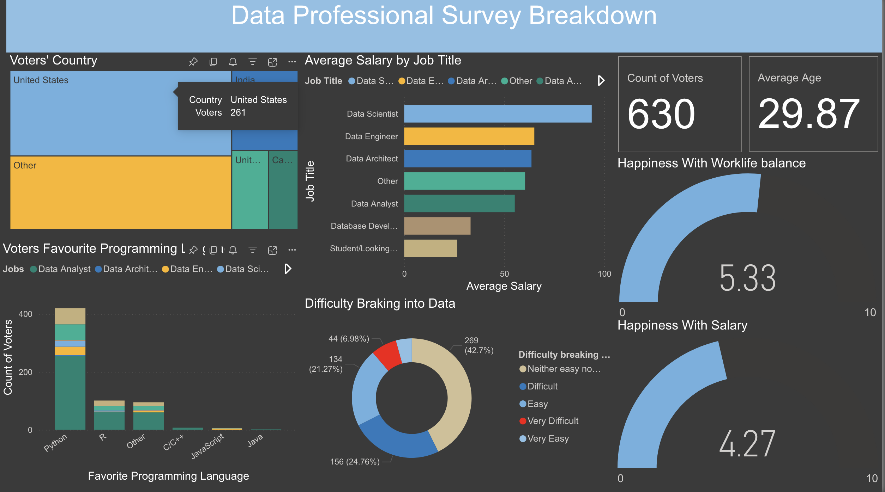
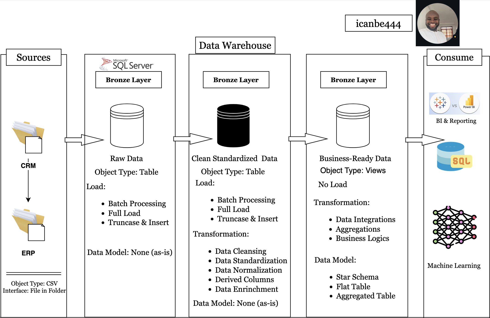
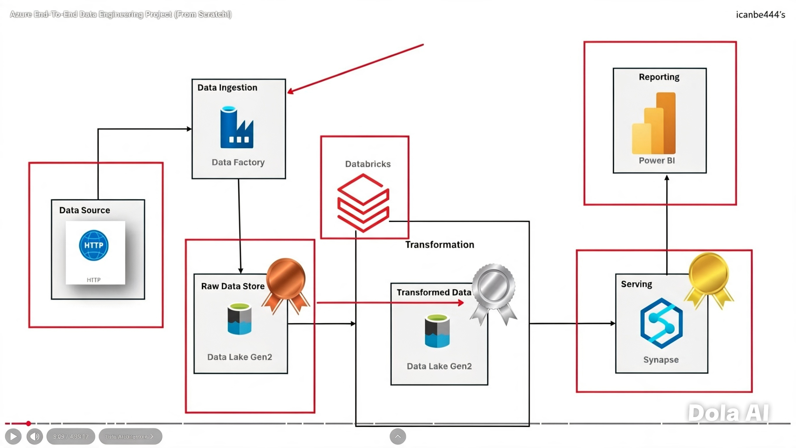
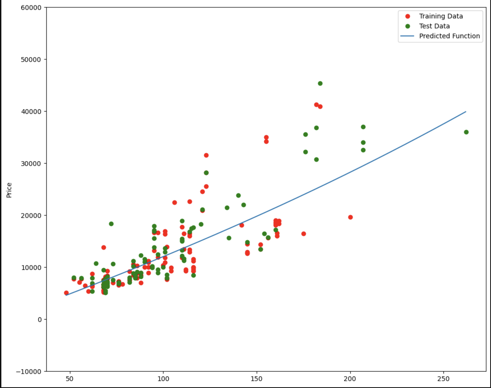
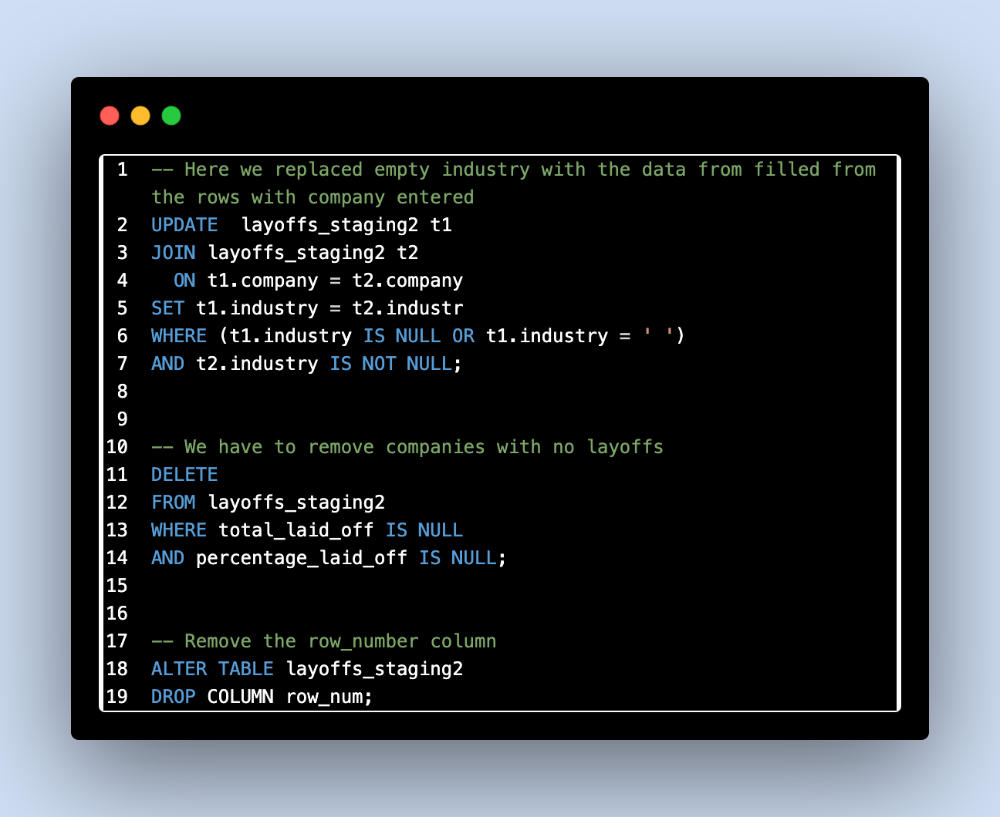

Hello, I'm
Akanbi Abdullahi
a Data Engineer
I build reliable backend systems, clean data pipelines and clear visual stories. I move projects from raw data to actionable insights.
About me
Web Developer, Backend Developer, Project Manager, Blogger, Technical Manager and a Teacher — those are a few of the hats I wear. What I truly am is a passionate tech enthusiast who seeks to understand the technologies that shape business, build solutions and interactive dashboards, and help teams make smarter, data-driven decisions.
I am actively transitioning into Data Engineering — an area I have been building towards with real intent. I have hands-on experience designing and maintaining data pipelines, working across the full data stack from ingestion and transformation through to reporting, and building cloud-based solutions on Azure and AWS. My background across development, project management and business intelligence gives me a broader perspective than most — I understand what the data needs to do for the business, not just how to move it.
If you are looking for a data engineer who can bridge the gap between technical delivery and business outcomes, I would love to connect. Outside of work, I enjoy travelling and play badminton.
- Experience: 8+ years
- Location: Manchester, UK
- Tools: Python, SQL, Azure, Power BI, Databricks
- Education: MSc — Information Technology (Business Intelligence) — Robert Gordon University
Quick facts
- Data pipeline design & ETL
- Cloud platforms — Azure & AWS
- BI reporting & dashboards
Skills & Tools
I build user interfaces, data pipelines and dashboards. Tools I use daily:
 Git
Git
 HTML5
HTML5
Credentials
This is how far i have come with hard work and dedication.

Selected Projects
Click any project to read the full case study.

Cyclistic Bike Sharing Analysis
Data cleaning, analysis & visualization · May 2024

Customer Analysis Dashboard
Power BI dashboard · Sep 2025

Data Warehouse Project
SQL · data warehouse design · Oct 2025

End-to-End Azure Data Engineering
Azure · Data Factory · Databricks · Synapse · Power BI

Customer Segmentation — R
Machine learning · regression · Oct 2024

SQL Data Cleaning Project
SQL · data quality pipeline · Sep 2024
Contact
Have a project? Drop a message or email me:
- Email: icanbe444@gmail.com
- Phone: (+44) 790 0027 155
- Location: Manchester, UK